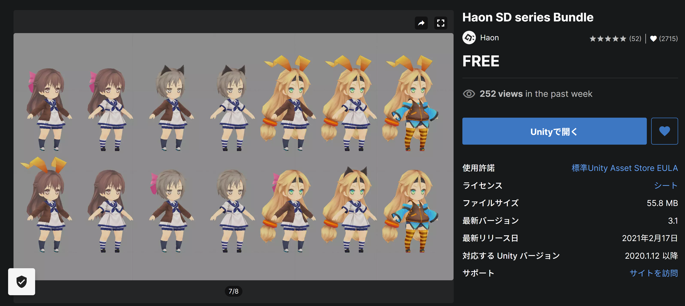

制作時間は1時間。サクッと作っちゃいましょう！
完成形はこちら（矢印キーで操作）
- １．床をつくる
- ２．迷路の壁をつくる
- ３．プレイヤーの設定
- ４．メインカメラの設定
- ５．スカイボックスの設定
１．床をつくる ～2min
まず、迷路の土台となる限りなく広い床を作ります。
ゲームオブジェクト→3Dオブジェクト→キューブを選択して、インスペクターのスケールを (x,y,z)=(50,1,20)にしておきましょう。
２．迷路の壁をつくる ～30min
先程と同じようにゲームオブジェクトからキューブを選択して、位置やスケールを調整しながら迷路の壁を作っていきます。
マテリアル(今回は大理石のテクスチャ)をつけて、こんな感じになりました。
60個程のオブジェクトが作られましたね。これをまとめるために、ヒエラルキー内を右クリック→「空のオブジェクトを作成」を選択して名前をwallに変更、そのwallに60個の壁オブジェクトをドラッグアンドドロップします。これでヒエラルキーを整理できました。
３．プレイヤーの設定 ～15min
今回はUnity Asset Storeの無料アセットを使います。
自分のプロジェクト画面にキャラクターを持ってきたら、キャラクターの座標を迷路のスタート位置にします。
次に、プレイヤーのインスペクターでコンポーネントをいくつか設定します。
今回追加するコンポーネントは
- Animator・・・アニメーションの追加
- Rigidbody・・・物理演算
- Capsule Collider・・・衝突判定
※RigidbodyのConstraintsから回転を固定→x,y,zすべてにチェックを入れましょう。
追加したCapsule Colliderは、プレイヤーのサイズに合うように中心・半径・高さの値を調節してください。
値はだいたいこの位でしょうか。
それではプレイヤーを動かすスクリプトを書いていきます。
プレイヤーのインスペクターで、「コンポーネントを追加」→「新しいスクリプト」→名前をplayerにして作成したら、Visual Studioを開いてください。
これで、上下矢印キーで進む/戻る、左右キーで回転できるようになりました。
次に、プレイヤーにアニメーションを加えましょう。
Assets内を右クリックして、作成→「アニメーターコントローラー」を選択し、名前をplayerにしておきます。
Assetsに次のアイコンが表示されました。
このアニメーターコントローラーを、プレイヤーのインスペクターにあるAnimatorの「コントローラー」にドラッグアンドドロップしましょう。
コントローラーがplayerになりました。それではこのコントローラーの設定をしていきます。
Assets内のアニメーターコントローラーをダブルクリックすると、Sceneビューだった場所がアニメーターの画面になりました。
ここを右クリック→「ステートの作成」→「空」を選択すると、EntryとNew Stateが矢印で繋がりました。
New Stateをクリックし、インスペクターのMotionをRunA_front@loopにします。これで走っているアニメーションをつけることができました。
４．メインカメラの設定 ～10min
今の状態だと、プレイヤーが進んで曲がると画角から外れてしまうので、メインカメラが常にプレイヤーを追うようにしたいと思います。
ヒエラルキーのMain Cameraをプレイヤーのオブジェクトにドラッグアンドドロップすることによって、カメラがプレイヤーについていくようになりました。
次に、新しいスクリプトを作成→メインカメラとプレイヤーの間に壁があるときその壁を一時的に非表示にするスクリプトを書き、メインカメラのインスペクターに追加します。
５．スカイボックスの設定 ～5min
ゲームの雰囲気を一気に変えてくれる、そんなスカイボックスを設定してみましょう。
今回はUnity Asset Storeの無料アセットを使います。
この中から、お好みで空模様を選びましょう。
ゲームの雰囲気が良い感じになりました。
迷路の完成！
1時間で簡単な3D迷路を作ることができました。
最後まで読んでくださりありがとうございました^^